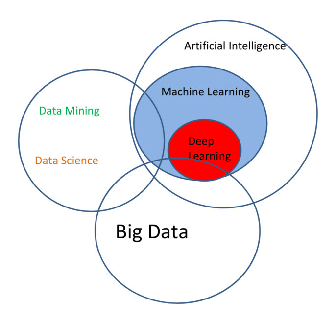

- What is Machine Learning?
- Some Examples
- Deep Learning
- Sum up/ Q&A
Introduction to Machine Learning
A few thoughts and some examples
Lars Bungum and Eivind Havikbotn
Synopsis
What is this?
sed <- function(s1, s2) {
if (nchar(s1) == 0)
return(nchar(s2))
if (nchar(s2) == 0)
return(nchar(s1))
if (substr(s1, 1, 1) == substr(s2, 1, 1)) {
sed(substr(s1, 2, nchar(s1)), substr(s2, 2, nchar(s2)))
}
else {
min(1 + sed(substr(s1, 2, nchar(s1)), s2),
1 + sed(s1, substr(s2, 2, nchar(s2))),
1 + sed(substr(s1, 2, nchar(s1)), substr(s2, 2, nchar(s2)))
)
}
}
Levenshtein Distance!
sed("lars", "lasse")
## [1] 2
sed("lars", "lauritz")
## [1] 4
Levenshtein Distance = Machine Learning
In Frameworks:
- Python: from leven import levenshtein
- R: library(stringdist)
- Java: weka
In Research

As you shout out in the forest, you are answered!




Machine Learning Enables Us To:
- Predict
- Explore
- Visualize
- Understand
with lots of data.
Prediction
Prediction ranges from predicting classes, binary or multiclass, i.e., "should I stay or should I go" vs. "when should I go", if the potential times are discrete. If they are continuous, we have a regression problem.
A lot (but not arbitrarily much!) context can be taken into account when making these predictions.
Example:
- Objective: "Predict the correct classification of this document."
- Input: "Frequencies of the words used in the document."
- Output: A class (eg., food, sports, finance, etc..)
Exploration
Visualization
Understanding
Why Would We Want To Do This?!
McKinsey Global Institute (2011) predicted the importance of Big Data/Data Science/Machine Learning: http://www.mckinsey.com/business-functions/digital-mckinsey/our-insights/big-data-the-next-frontier-for-innovation
The McKinsey Global Institute argues that data analytics is emerging at the forefront as the competitive advantage of any business, driving productivity, growth and innovation.
A human being can not read thens of thousands of document per day, let alone per hour, minute or second. Computers can! (Or can they?!)
Digression: The Chinese Room (John Searle)

More Concretely (Finally!)
- Supervised Learning
- Unsupervised Learning
- Semi-Supervised Learning
- Active Learning
Supervised Learning
Supervision means that the algorithms are instructed.
Example: Objective: Determine the spamicity of emails. Input: A corpus of emails tagged as spam and ham. Output: Spam/Ham
The computerized model learns weights that are multiplied with features generated from emails to determine their status. Thus, the model can be applied to novel (new) data.
Unsupervised Learning
Algorithms are not provided a set of goals they are to reach.
Example Algorithms
Naive Bayes Classification